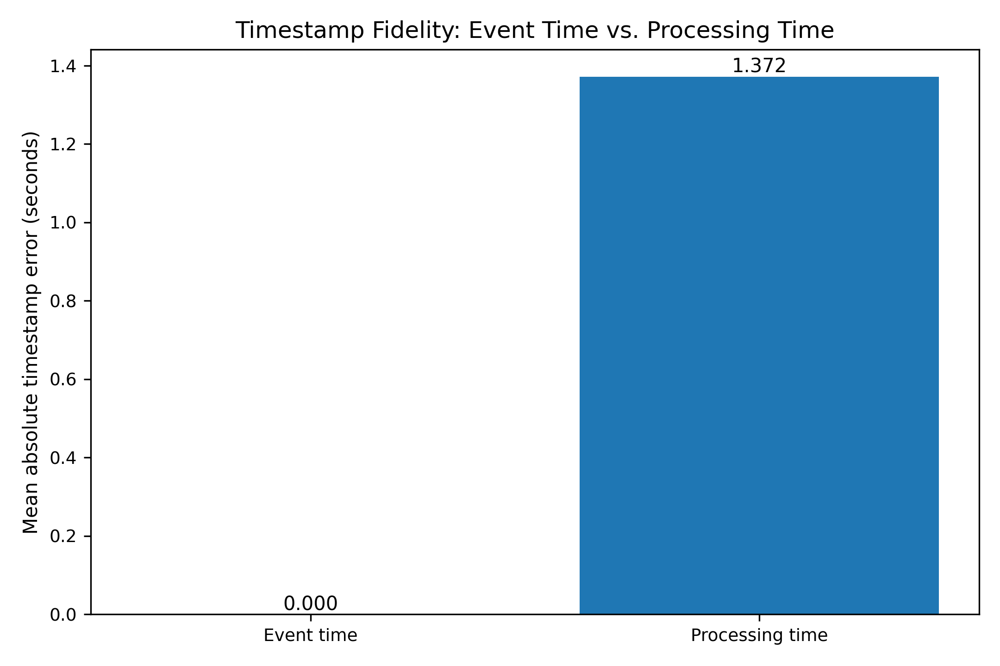
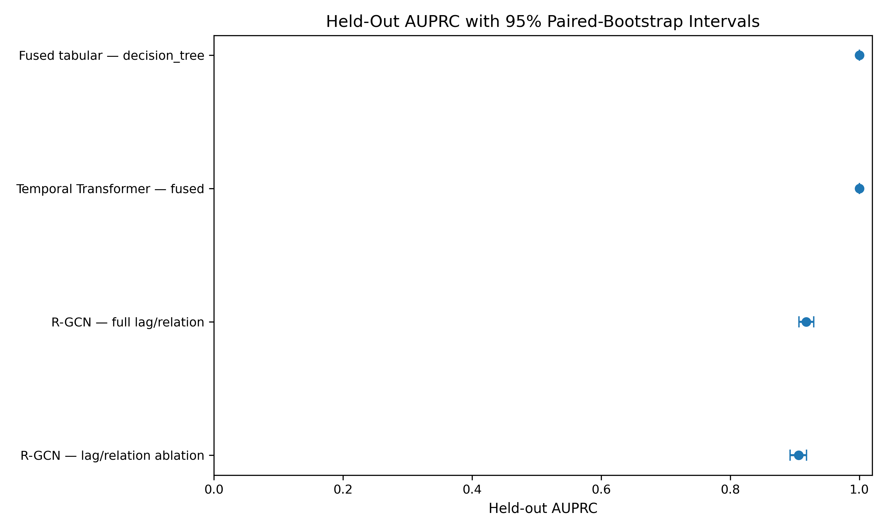
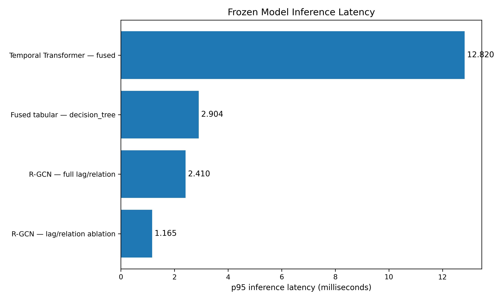
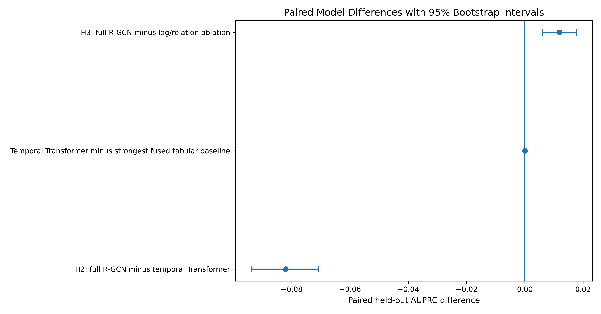
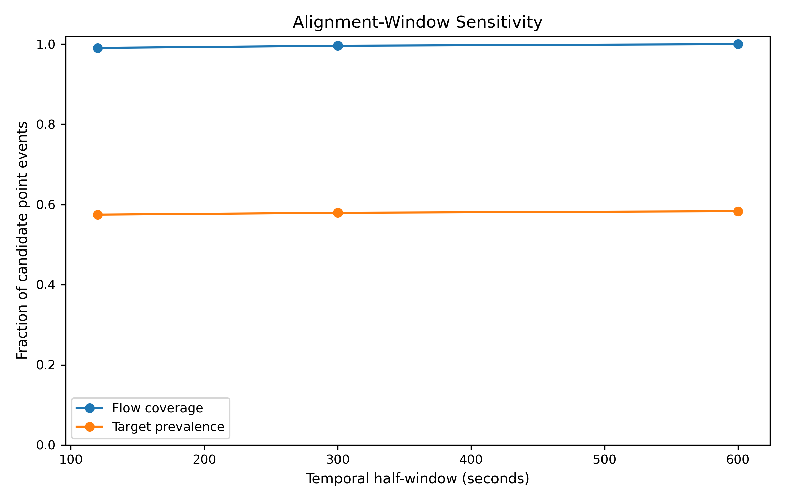
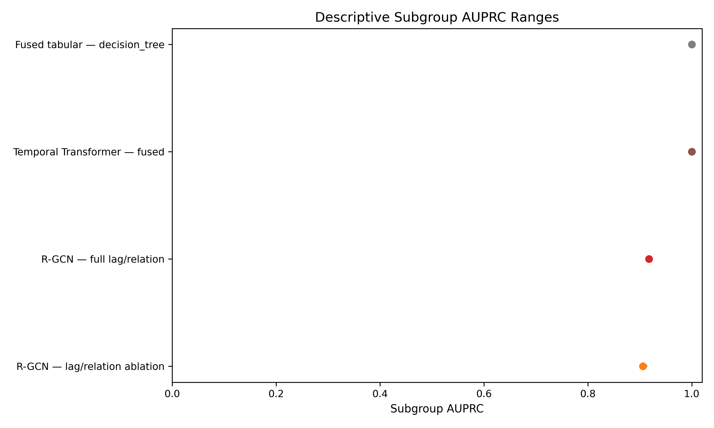
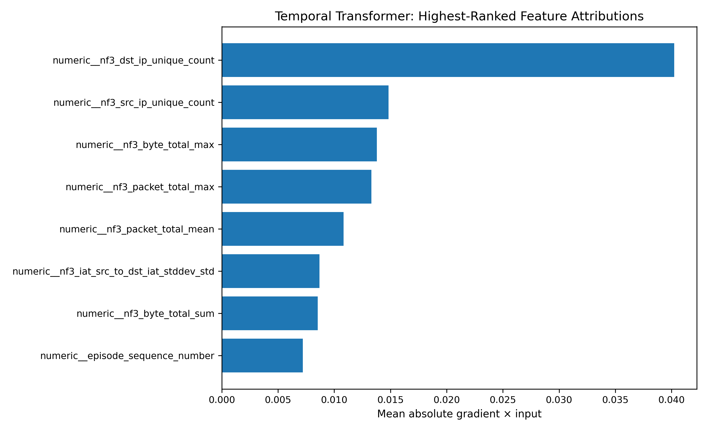
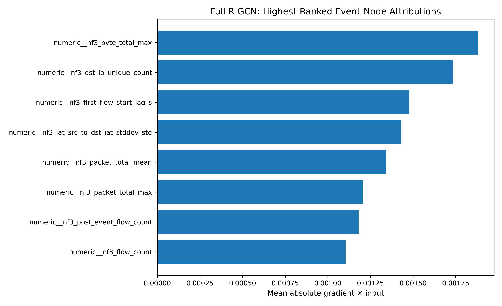
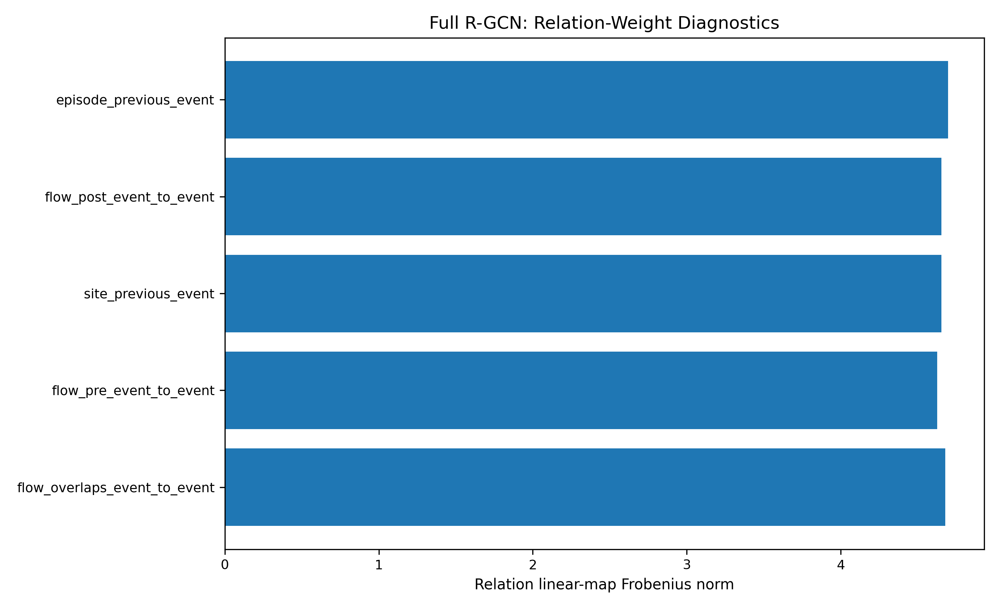

Interpretation boundary: Controlled cross-domain alignment performance; not evidence of causal or site-coincident aircraft/cyber incidents.
Evaluation design, frozen sample counts, and interpretation boundary for the controlled cross-domain alignment experiment.
| Design element | Value |
|---|---|
| Candidate low-altitude point events | 12,185 |
| Common held-out events | 1,828 |
| Positive held-out events | 913 |
| Held-out target prevalence | 49.95% |
| Primary temporal window | ±120 seconds |
| Alignment mode | point event nf3 alignment leakage safe v2 |
| Paired bootstrap iterations | 2,000 |
| Minimum subgroup rows | 25 |
| Interpretation boundary | Controlled cross-domain alignment performance; not evidence of causal or site-coincident aircraft/cyber incidents. |
Event-time and processing-time timestamp fidelity by event subset. The all-events row carries the paired-bootstrap uncertainty interval used for H1.
| Subset | n | Event-time MAE (s) | Processing-time MAE (s) | MAE reduction (s) | Reduction 95% CI (s) | Processing-time median AE (s) | Processing-time p95 AE (s) | H1 decision |
|---|---|---|---|---|---|---|---|---|
| All Events | 12,185 | 0.000 | 1.372 | 1.372 | [1.327, 1.421] | 1.000 | 3.000 | Supported |
| Non Stale Events | 12,161 | 0.000 | 1.277 | 1.277 | — | 1.000 | 3.000 | Descriptive |
| Stale Events | 24 | 0.000 | 49.500 | 49.500 | — | 40.000 | 89.500 | Descriptive |
Frozen validation and held-out performance for the selected fused tabular, temporal Transformer, full R-GCN, and R-GCN ablation models.
| Model | Validation AUPRC | Test AUPRC | Test ROC-AUC | Precision | Recall | F1 | Balanced accuracy | Brier score | Threshold | p95 latency (ms) |
|---|---|---|---|---|---|---|---|---|---|---|
| Fused tabular — decision_tree | 1.0000 | 1.0000 | 1.0000 | 1.0000 | 1.0000 | 1.0000 | 1.0000 | 0.0000 | 1.0000 | 2.904 |
| Temporal Transformer — fused | 0.9995 | 1.0000 | 1.0000 | 0.9989 | 0.9967 | 0.9978 | 0.9978 | 0.0015 | 0.3675 | 12.820 |
| R-GCN — full lag/relation | 0.9446 | 0.9179 | 0.9081 | 0.7831 | 0.8740 | 0.8261 | 0.8163 | 0.1389 | 0.4395 | 2.410 |
| R-GCN — lag/relation ablation | 0.9256 | 0.9060 | 0.8979 | 0.7335 | 0.9014 | 0.8088 | 0.7873 | 0.1682 | 0.4153 | 1.165 |
Paired held-out AUPRC differences. Positive differences favor the left-hand model named in each comparison.
| Comparison | AUPRC difference | 95% CI | Required margin | P(difference > 0) | P(meets required margin) | Point-margin result |
|---|---|---|---|---|---|---|
| H2: full R-GCN minus temporal Transformer | -0.0821 | [-0.0936, -0.0707] | 0.0300 | 0.0% | 0.0% | Fail |
| H3: full R-GCN minus lag/relation ablation | +0.0119 | [+0.0061, +0.0176] | 0.0500 | 100.0% | 0.0% | Fail |
| Temporal Transformer minus strongest fused tabular baseline | -0.0000 | [-0.0000, 0.0000] | 0.0000 | 1.2% | 34.8% | Fail |
Consolidated H1–H3 point criteria, uncertainty intervals, and decisions.
| Hypothesis | Research question | Criterion | Observed | Required | 95% CI | Latency | Decision |
|---|---|---|---|---|---|---|---|
| H1 | RQ1 | Event-time MAE reduction versus processing time >= 1.0 second | +1.3717 | 1.0000 | [+1.3274, +1.4210] | — | Supported |
| H2 | RQ2 | Full R-GCN test AUPRC - temporal Transformer test AUPRC >= 0.03 | -0.0821 | 0.0300 | [-0.0936, -0.0707] | — | Not supported |
| H3 | RQ3 | Full R-GCN test AUPRC - lag/relation ablation test AUPRC >= 0.05 and full local p95 latency <= 500 ms | +0.0119 | 0.0500 | [+0.0061, +0.0176] | 2.410 ms (limit 500.0 ms) | Not supported |
Sensitivity of controlled flow coverage and binary targets to the temporal window. Models were not retrained for these descriptive window comparisons.
| Window | Events | Events with flows | Flow coverage | Positive targets | Target prevalence | Target changes vs. primary | Positive-set Jaccard | Boundary-truncated events |
|---|---|---|---|---|---|---|---|---|
| ±120 s | 12,185 | 12,070 | 99.06% | 7,001 | 57.46% | 0 | 1.0000 | 0 |
| ±300 s | 12,185 | 12,135 | 99.59% | 7,057 | 57.92% | 56 | 0.9921 | 0 |
| ±600 s | 12,185 | 12,185 | 100.00% | 7,107 | 58.33% | 106 | 0.9851 | 0 |
Descriptive range of subgroup AUPRC values under each model's frozen threshold. These summaries are diagnostic and are not additional hypothesis tests.
| Model | Reported subgroups | Minimum subgroup AUPRC | Median subgroup AUPRC | Maximum subgroup AUPRC | Lowest subgroup | Highest subgroup |
|---|---|---|---|---|---|---|
| R-GCN — full lag/relation | 5 | 0.9169 | 0.9179 | 0.9183 | recurrence_context: first_observed_event | recurrence_context: prior_event_present |
| R-GCN — lag/relation ablation | 5 | 0.9057 | 0.9060 | 0.9123 | source_type: ADSB | recurrence_context: first_observed_event |
| Fused tabular — decision_tree | 5 | 1.0000 | 1.0000 | 1.0000 | source_type: ADSB | timestamp_freshness: non_stale |
| Temporal Transformer — fused | 5 | 1.0000 | 1.0000 | 1.0000 | recurrence_context: prior_event_present | recurrence_context: first_observed_event |
Highest-ranked Transformer and R-GCN explanation components within each source and explanation method. Importance magnitudes are not compared across methods.
| Model family | Variant | Component type | Rank | Component | Importance metric | Importance |
|---|---|---|---|---|---|---|
| Rgcn | full lag relation | event node feature | 1 | numeric__nf3_byte_total_max | mean_absolute_gradient_times_input | 0.001881 |
| Rgcn | full lag relation | event node feature | 2 | numeric__nf3_dst_ip_unique_count | mean_absolute_gradient_times_input | 0.001733 |
| Rgcn | full lag relation | event node feature | 3 | numeric__nf3_first_flow_start_lag_s | mean_absolute_gradient_times_input | 0.001478 |
| Rgcn | full lag relation | event node feature | 4 | numeric__nf3_iat_src_to_dst_iat_stddev_std | mean_absolute_gradient_times_input | 0.001427 |
| Rgcn | full lag relation | event node feature | 5 | numeric__nf3_packet_total_mean | mean_absolute_gradient_times_input | 0.001342 |
| Rgcn | full lag relation | event node feature | 6 | numeric__nf3_packet_total_max | mean_absolute_gradient_times_input | 0.001205 |
| Rgcn | full lag relation | event node feature | 7 | numeric__nf3_post_event_flow_count | mean_absolute_gradient_times_input | 0.001181 |
| Rgcn | full lag relation | event node feature | 8 | numeric__nf3_flow_count | mean_absolute_gradient_times_input | 0.001104 |
| Rgcn | full lag relation | flow node feature | 1 | numeric__dst_port | mean_absolute_gradient_times_input | 0.000022 |
| Rgcn | full lag relation | flow node feature | 2 | categorical__protocol_6 | mean_absolute_gradient_times_input | 0.000010 |
| Rgcn | full lag relation | flow node feature | 3 | numeric__src_port | mean_absolute_gradient_times_input | 0.000009 |
| Rgcn | full lag relation | flow node feature | 4 | numeric__flow_duration_s | mean_absolute_gradient_times_input | 0.000004 |
| Rgcn | full lag relation | flow node feature | 5 | categorical__protocol_17 | mean_absolute_gradient_times_input | 0.000003 |
| Rgcn | full lag relation | flow node feature | 6 | categorical__protocol_1 | mean_absolute_gradient_times_input | 0.000000 |
| Rgcn | full lag relation | flow node feature | 7 | categorical__protocol_89 | mean_absolute_gradient_times_input | 0.000000 |
| Rgcn | full lag relation | flow node feature | 8 | categorical__protocol_132 | mean_absolute_gradient_times_input | 0.000000 |
| Rgcn | full lag relation | relation weight layer 0 | 1 | flow_overlaps_event_to_event | linear_weight_frobenius_norm | 4.679692 |
| Rgcn | full lag relation | relation weight layer 0 | 2 | episode_previous_event | linear_weight_frobenius_norm | 4.657303 |
| Rgcn | full lag relation | relation weight layer 0 | 3 | site_previous_event | linear_weight_frobenius_norm | 4.654325 |
| Rgcn | full lag relation | relation weight layer 0 | 4 | flow_post_event_to_event | linear_weight_frobenius_norm | 4.604733 |
| Rgcn | full lag relation | relation weight layer 0 | 5 | aircraft_previous_event | linear_weight_frobenius_norm | 4.599364 |
| Rgcn | full lag relation | relation weight layer 0 | 6 | flow_pre_event_to_event | linear_weight_frobenius_norm | 4.586340 |
| Rgcn | lag relation ablation | relation weight layer 0 | 1 | flow_to_event | linear_weight_frobenius_norm | 4.666147 |
| Rgcn | lag relation ablation | relation weight layer 0 | 2 | site_previous_event | linear_weight_frobenius_norm | 4.650347 |
| Rgcn | lag relation ablation | relation weight layer 0 | 3 | episode_previous_event | linear_weight_frobenius_norm | 4.637963 |
| Rgcn | lag relation ablation | relation weight layer 0 | 4 | aircraft_previous_event | linear_weight_frobenius_norm | 4.591791 |
| Rgcn | full lag relation | relation weight layer 1 | 1 | episode_previous_event | linear_weight_frobenius_norm | 4.697170 |
| Rgcn | full lag relation | relation weight layer 1 | 2 | flow_post_event_to_event | linear_weight_frobenius_norm | 4.652924 |
| Rgcn | full lag relation | relation weight layer 1 | 3 | site_previous_event | linear_weight_frobenius_norm | 4.632119 |
| Rgcn | full lag relation | relation weight layer 1 | 4 | flow_pre_event_to_event | linear_weight_frobenius_norm | 4.626242 |
| Rgcn | full lag relation | relation weight layer 1 | 5 | flow_overlaps_event_to_event | linear_weight_frobenius_norm | 4.622807 |
| Rgcn | full lag relation | relation weight layer 1 | 6 | aircraft_previous_event | linear_weight_frobenius_norm | 4.621806 |
| Rgcn | lag relation ablation | relation weight layer 1 | 1 | episode_previous_event | linear_weight_frobenius_norm | 4.709724 |
| Rgcn | lag relation ablation | relation weight layer 1 | 2 | site_previous_event | linear_weight_frobenius_norm | 4.664373 |
| Rgcn | lag relation ablation | relation weight layer 1 | 3 | flow_to_event | linear_weight_frobenius_norm | 4.644923 |
| Rgcn | lag relation ablation | relation weight layer 1 | 4 | aircraft_previous_event | linear_weight_frobenius_norm | 4.624095 |
| Temporal Transformer | fused | transformed feature | 1 | numeric__nf3_dst_ip_unique_count | mean_absolute_gradient_times_input | 0.040240 |
| Temporal Transformer | fused | transformed feature | 2 | numeric__nf3_src_ip_unique_count | mean_absolute_gradient_times_input | 0.014829 |
| Temporal Transformer | fused | transformed feature | 3 | numeric__nf3_byte_total_max | mean_absolute_gradient_times_input | 0.013795 |
| Temporal Transformer | fused | transformed feature | 4 | numeric__nf3_packet_total_max | mean_absolute_gradient_times_input | 0.013306 |
| Temporal Transformer | fused | transformed feature | 5 | numeric__nf3_packet_total_mean | mean_absolute_gradient_times_input | 0.010819 |
| Temporal Transformer | fused | transformed feature | 6 | numeric__nf3_iat_src_to_dst_iat_stddev_std | mean_absolute_gradient_times_input | 0.008684 |
| Temporal Transformer | fused | transformed feature | 7 | numeric__nf3_byte_total_sum | mean_absolute_gradient_times_input | 0.008541 |
| Temporal Transformer | fused | transformed feature | 8 | numeric__episode_sequence_number | mean_absolute_gradient_times_input | 0.007199 |








